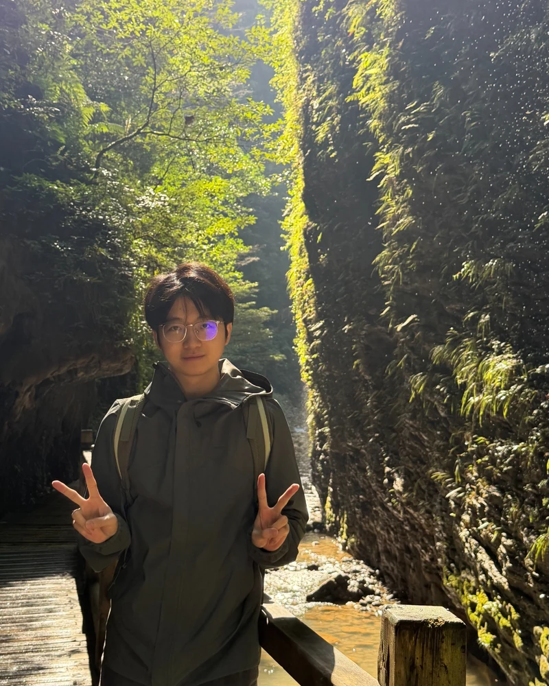

LogNexus: Effective Log Compression via Unified Redundancy Encoding
ISSTA 2026 · Research Track
Master's Student · Sun Yat-sen University

I am a master's student in Software Engineering at Sun Yat-sen University, under the supervision of Dr. Zhuangbin Chen (expected graduation: 2028). I also received my bachelor's degree from Sun Yat-sen University.
My research focuses on the reliability of LLM infrastructure and distributed systems, particularly failure detection, diagnosis, and recovery.
Sun Yat-sen University · M.Eng. in Software Engineering (2025–present)
Sun Yat-sen University · B.Eng. in Software Engineering (2021–2025)
Research Intern · Huawei 2012 Labs, ShenzhenJul 2026 – Present
Research on LLM training and inference infrastructure reliability, focusing on fault injection, failure detection, and recovery evaluation across GPU and Ascend NPU systems.
Research Intern · Huawei Cloud, ShenzhenJan – Jul 2025
Research on automated resilience testing for cloud services, including trace-guided test generation and fault injection.
Computer Graphics · Sun Yat-sen University2025–2026
Software Engineering Practical Training (Intermediate) · Sun Yat-sen University2024–2025, 2025–2026
Data Structures and Algorithms · Sun Yat-sen University2024–2025